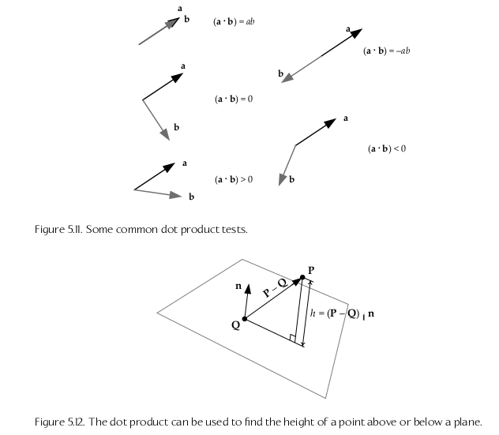
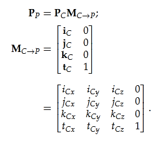
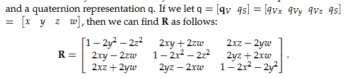
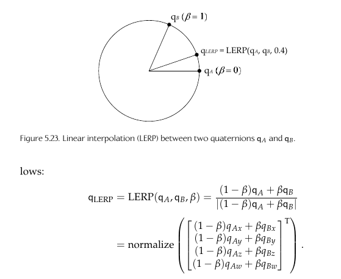
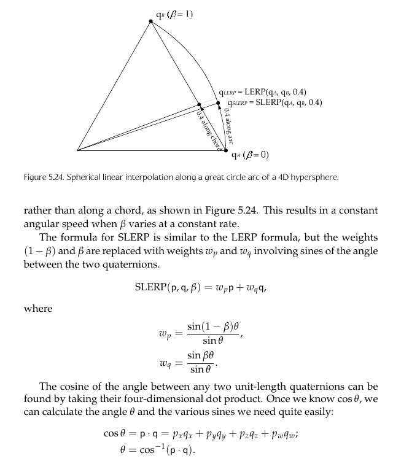

dot product a * u = the length of the projection
of a onto direction u
Dot Product Applications

Cross product
a x b = [(aybz - azby), (azbx - axbz), (axby - aybx)]
Cross product to find the normal vector of a plane
Given points P1, P2, P3
normal vector n = normalize((P2 - P1)x(P3 - P1))
Linear Interpolation (LERP)
Finds an intermediate point between 2 other points
LERP(A,B,β) = (1-β)A + βB
= [(1-β)Ax + βx, (1-β)Ay + βy, (1-β)Az + βz]
β = percent between A and B
Row vs Column Vectors
Row vectors: multiply with matrices left-to-right
v' = v*A * B * C
Col vectors: multiply with matrices right-to-left
v' = C*B*A*v
Affine transformations and matrix inverse
All affine transformation matrices have inverses:
AA-1 = *I
Rotate, translate, scale, and shear
(ABC)-1 = C-1B-1A-1
Matrix transpose
MT = values reflected across the diagonal
Mi,j = Mj,i
(ABC)T = CTBTAT
Homogeneous coordinates
Point has w component = 1
Direction has w component = 0
Homoegeneous transformation matrices have w component = 1
since they deal with transforming points
Yaw, pitch, roll
Pitch: rotation around left/right/x axis
Yaw: rotation around up/y axis
Roll: rotation around front/z axis
Coordinate Spaces
Model space: origin is at the center of the object/model
World space: all objects/models are relative to this center
View space/camera space: origin is center of the camera
Change of Basis (converting between coordinate spaces)
Pp = result parent space vector
Pc = initial child space vector to convert
i,j,k,t are the unit basis vectors for the child space
t is the translation of the child coordinate system
relative to the parent space
Mc->p = change of basis matrix

Given any affine 4x4 transform matrix, you can
extract the child space basis vectors be isolating
the appropriate row (if in the row format as shown above)
or column
transforming normal vectors
Normals are transformed from space A to B by the
transpose of the inverse of the matrix shown
above (given change of basis matrix Ma->b, the
normal transformation matrix is
(Ma->b-1)T)
Quaternions
Alternative and simpler way to represent rotations
Looks like a 4d vector but behaves differently
q = [qx qy qz qw]
alternative representations:
q = [qv qs] (qv is the vector part, qs is a scalar)
In our case, using unit length quaternions,
|q|2 = 1, so inverse = conjugate
(pq)* = q*p*
(pq)-1 = q-1p-1
Rotating a vector with a quaternion
Convert vector v into quaternion form
for a 3d vec, add a fourth w component = 0
v quaternion = [vx vy vz 0]
multiply by the quaternion
multiply by its inverse
result quaternion v' = qvquatq-1
extract the first 3 components of v' back into vector
form
Multiplcations can be concatenated/combined into a single
quaternion like matrix multiplications
e.g. Rnet = R3*R2*R1
v' = q3q2q1vquatq1-1q2-1q3-1
Quaternions to Rotation matrix
Can be converted to and from 3d rotation matrix rep:

Rotational Linear Interpolation
Can find a quaternion point between two other quaternions via LERP:

Results in the weighted average between qA and qB (Β percent
between qA and qB)
Spherical Linear Interpolation
Spherical Linear Interpolation: SLERP

On PS3 SPUs, Naughty Dog's Ice Team's SLERP implementation
takes 20 cycles per joint, while LERP takes 16.25 cycles per
joint.
SLERP as opposed to LERP can result in better looking animations
However LERP is usually good enough for most purposes
Euler Angles
[θy θp θr] = yaw, pitch, roll
Cannot be easily interpolated
Gimbal lock: 90 degree rotation causes 1 of the axis to collapse
onto one of the other axis
Order in which the axis are rotated matters, e.g. Pitch,Yaw,then Roll
will result differently than Yaw,Pitch,then Roll
3x3 rotation matrices are not intuitive in terms of understanding
the transformation, and cannot be easily interpolated.
3x3 rotation matrices take up 9 float numbers as opposed to
3 float numbers for euler angles
Axis+Angle representation
A unit vector representing axis (x,y,z) then the angle =
[ax ay az θ]
Cannot be easily interpolated
SRT Transformation
Combines quaternions (rotation representation) with
a translation vector and scale factor, resulting
in an alternative to 4x4 affine transformation matrices